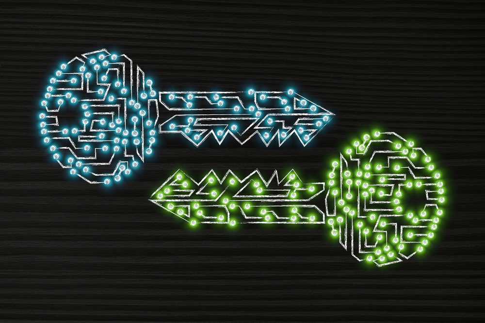

Accounts
Crypto in action.
Core Concepts:
- trusting math enforced via code vs an opaque centralized b2c database operator
- creating accounts
- creating signatures
Other Concepts
- how you can create a pair of numbers such that it's easy to find one from the other, but not the other way around
- how you can sign stuff with your private key, and others can verify that signature with your public key
- this is grounded in the hardness of cryptography, not the choice of a central operator
Weak randomness can lead to hacked keys and crypto systems. This isn't a concern with our toy demo, but for any live working blockchain it's mission critical.
- https://en.wikipedia.org/wiki/RSA_(cryptosystem)
TODO
- add info about the data structure of accounts (nonces, balances, keys, etc)
Account nonce:
A transaction counter in each account. This prevents replay attacks where a transaction sending eg. 20 coins from A to B can be replayed by B over and over to continually drain A's balance.
Computational infeasibility:
A process is computationally infeasible if it would take an impracticably long time (eg. billions of years) to do it for anyone who might conceivably have an interest in carrying it out. Generally, 280 computational steps is considered the lower bound for computational infeasibility.
Encryption:
Encryption is a process by which a document (plaintext) is combined with a shorter string of data, called a key (eg. c85ef7d79691fe79573b1a7064c19c1a9819ebdbd1faaab1a8ec92344438aaf4), to produce an output (ciphertext) which can be "decrypted" back into the original plaintext by someone else who has the key, but which is incomprehensible and computationally infeasible to decrypt for anyone who does not have the key.
Public key encryption:
A special kind of encryption where there is a process for generating two keys at the same time (typically called a private key and a public key), such that documents encrypted using one key can be decrypted with the other. Generally, as suggested by the name, individuals publish their public keys and keep their private keys to themselves.
Digital signature:
A digital signing algorithm is a process by which a user can produce a short string of data called a "signature" of a document using a private key such that anyone with the corresponding public key, the signature and the document can verify that (1) the document was "signed" by the owner of that particular private key, and (2) the document was not changed after it was signed. Note that this differs from traditional signatures where you can scribble extra text onto a document after you sign it and there's no way to tell the difference; in a digital signature any change to the document will render the signature invalid.
This recreates the RSA style protocol explained in the RSA wiki page, randomly generating primes for p and q and demonstrating that the protocol works for various inputs :)
extern crate rand;
use rand::prelude::*;
// variable names based off Euclidean divison equation: a = b · q + r
// https://crates.io/crates/gcd
// https://en.wikipedia.org/wiki/Greatest_common_divisor
fn gcd(a: i32,
b: i32) -> i32 {
let (mut a, mut b) = if a > b {
(a, b)
} else {
(b, a)
};
while b != 0 {
let r = a % b;
a = b;
b = r;
}
a
}
// lowest common multiple
// https://en.wikipedia.org/wiki/Least_common_multiple
fn lcm(a: i32,
b: i32) -> i32 {
let lcm = (a * b) / gcd(a, b);
lcm
}
// Carmichael's totient function
// https://en.wikipedia.org/wiki/Carmichael_function
fn ctf(a: i32,
b: i32) -> i32 {
lcm((a - 1), (b - 1))
}
// slowly check if a number is prime
fn slow_prime_check(num: i32) -> bool {
if num < 0 {
println!("number must be greater than 0");
}
if num > 1000000 {
println!("number cannot be greater than 1000000");
}
for i in 2..num{
if num % i == 0 {
return false
}
}
true
}
// slowly yet randomly generate a prime number within a range
fn prime_gen(low: i32,
high: i32) -> i32 {
for i in 0..1000000 {
let p = thread_rng().gen_range(low, high);
if slow_prime_check(p) {
return p
}
}
0
}
// generate a public key within a range
fn pub_key_gen(min: i32,
max: i32) -> i32 {
let pub_key = prime_gen(min, max);
assert!(max % pub_key != 0);
pub_key
}
// slowly find the modular multiplicative inverse of a prime
fn slow_mmi(ctf_pq: i32,
pub_key: i32,
max: i32)-> i32 {
for i in 2..max {
if (i * pub_key) % ctf_pq == 1 {
return i
}
}
println!("Try larger search?");
0
}
// create a private key from a public key and other data
fn priv_key_gen(ctf_pq: i32,
pub_key: i32) -> i32 {
let priv_key = slow_mmi(ctf_pq, pub_key, 100000);
priv_key
}
// Because... Rust.
// exp_mod() is like pow() with a mod option
// (like python does natively, but not Rust)
// https://docs.python.org/3/library/functions.html#pow
// https://doc.rust-lang.org/nightly/std/primitive.i32.html#method.pow
// https://en.wikipedia.org/wiki/Modular_exponentiation
fn exp_mod(input: i32,
power: i32,
modulo: i32) -> i32 {
let mut out = (input * input) % modulo;
// because the first iter of out took 2 off the base
for i in 0..power-2 {
out = (out * input) % modulo;
}
out
}
// toy RSA function
fn toy_rsa(input: Vec<i32>,
key: i32,
modulo: i32) -> Vec<i32> {
let output = input.iter()
.map(|x| exp_mod(*x, key, modulo))
.collect();
output
}
// convert string to Vec<i32>
fn s2v(input: String) -> Vec<i32> {
let output: Vec<i32> = input.as_bytes()
.iter()
.map(|x| *x as i32)
.collect();
output
}
// convert Vec<i32> to string
fn v2s(input: Vec<i32>) -> String {
let output_u8: Vec<u8> = input.iter()
.map(|x| *x as u8)
.collect();
let output_string = String::from_utf8(output_u8).unwrap();
output_string
}
// Rollin, rollin, rollin... !
fn main() {
/*
// the numbers from wiki work
// https://en.wikipedia.org/wiki/RSA_(cryptosystem)
let p = 61;
let q = 53;
let m = 3233;
let ctf_pq = 780;
let pub_key = 17;
let priv_key = 413;
*/
// usually works on Rust Playground when p and q are < 500
let p = prime_gen(5, 100);
let q = prime_gen(5, 100);
let m = p * q;
let ctf_pq = ctf(p, q);
let pub_key = pub_key_gen(1, ctf_pq);
let priv_key = priv_key_gen(ctf_pq, pub_key);
println!("\n// Params //");
assert!(p > 0);
assert!(q > 0);
println!("p: {}", &p);
println!("q: {}", &q);
println!("m: {}", &m);
println!("ctf_pq: {}", &ctf_pq);
println!("pub_key: {}", &pub_key);
println!("priv_key: {}", &priv_key);
let message = "thepasswordispassword".to_string();
let m2nums = s2v(message.clone());
let ciphertext = toy_rsa(m2nums.clone(), pub_key, m);
let decrypted = toy_rsa(ciphertext.clone(), priv_key, m);
let message2 = v2s(decrypted.clone());
assert_eq!(message, message2);
println!("\n// Testing //");
println!("message: {:?}", &message);
println!("message as nums: {:?}", &m2nums);
println!("ciphertext: {:?}", &ciphertext);
println!("decrypted nums: {:?}", &decrypted);
println!("decrypted message: {}", &message2);
println!("DONE!");
}
Always Good To Get A Second Opinion
Ethereum Wiki Glossary
- https://github.com/ethereum/wiki/wiki/Glossary
RSA Pub Key Stuff
- https://en.wikipedia.org/wiki/Public-key_cryptography
- https://en.wikipedia.org/wiki/RSA_(cryptosystem)
- https://en.wikipedia.org/wiki/Least_common_multiple
- https://en.wikipedia.org/wiki/Modular_exponentiation
Ethereum Key Stuff
- Appendix F of the Yellow Paper: https://ethereum.github.io/yellowpaper/paper.pdf
- Parity Ethereum Client (Rust): ethkey library: https://github.com/paritytech/parity-ethereum/tree/master/accounts/ethkey